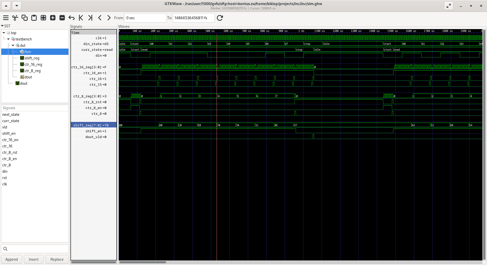

Výstupní zpráva
Jméno: Tomáš Brablec
Login: xbrabl04
Architektura navrženého obvodu
Schéma obvodu

Popis funkce
Stavový automat je inicializován do stavu IDLE, ve kterém čeká, dokud není na DIN
logická nula. Poté přechází do stavu START, a spustí COUNTER_8 nastavením logické
jedničky na výstupu CTR_8_EN. Jakmile dosáhne hodnota v čítači osmi (resp. sedmi, protože
počítá od nuly), signál CTR_8 jde do log. 1, a automat přejde do stavu READ. Už při přechodu
resetuje čítač COUNTER_8, který bude dále využit k počítání přijatých datových bitů. Při
změně stavu je rovněž spuštěn čítač COUNTER_16, který bude určovat mezery mezi jednotlivými
datovými bity, přičemž signál CTR_15 slouží k zapsání bitu z DIN do posuvného registru
SHIFT_REG, a signál CTR_16 inkrementuje počet přijatých bitů. Jakmile je přijato
všech 8 datových bitů, signál CTR_8 přechází opět do log. 1, a posune FSM do stavu STOP.
Čítač COUNTER_16 napočítá dalších 16 hodinových cyklů, tím se dostane do STOP bitu, načež
se na jeden hodinový cyklus aktivuje výstup DOUT_VLD, a automat přechází zpět do stavu IDLE.
Návrh stavového automatu
Schéma automatu
Legenda:
- Stavy automatu: IDLE, START, READ, STOP
- Vstupní signály: DIN, CTR_8, CTR_16
- Mealyho výstupy: CTR_8_EN, CTR_8_RST
- Moorovy výstupy: SHIFT_EN, CTR_16_EN, VLD

Popis funkce
Automat se po resetování nachází ve stavu IDLE, ve kterém čeká na log. nulu v DIN. Poté
přechází do stavu START, ve kterém čeká 8 hodinových cyklů. Po osmi cyklech se DIN nachází
přesně ve středu START bitu. FSM následně přechází do stavu READ, kdy spustí opakující se
čítač, který každých 16 hodinových cyklů načte jeden bit z DIN do posuvného registru.
Vzhledem k tomu, že byl 16 stavový čítač spuštěn uprosteřed START bitu, bude hodnota z DIN
samplována přesně ve středu každého datového bitu. Po zaznamenání všech osmi bitů přechází
automat do stavu STOP, ve kterém čeká dalších 16 cyklů. Po šestnácti cyklech se nachází DIN
uvnitř STOP bitu (log. 1), takže může automat přejít zpět do stavu IDLE. Ve stavu STOP je
aktivní výstup VLD, který po operaci AND s výstupem 16 stavového čítače na jeden hodinový cyklus
aktivuje výstup DOUT_VLD.
Snímek obrazovky ze simulací
